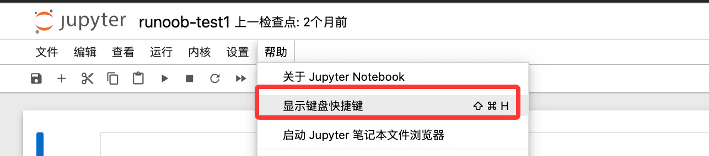
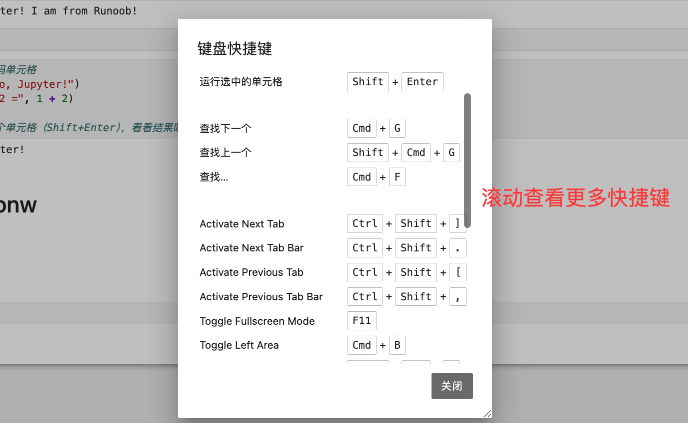

Jupyter Notebook atajos de teclado comunes y trucos prácticos
Jupyter Notebook es el entorno de desarrollo interactivo más popular en el campo de la ciencia de datos y el aprendizaje automático. Dominar sus atajos de teclado y trucos puede mejorar enormemente la eficiencia del desarrollo diario.
Puedes hacer clic en el menú Ayuda para ver los atajos de teclado:


Todos los atajos de teclado de este artículo se basan enWindows/Linuxcomo referencia. Los usuarios de Mac deben cambiar
CtrlporCmdy cambiarAltporOption。
Dos modos de operación
Jupyter Notebook tiene dos modos,todos los atajos de teclado dependen del modo actual, un punto clave que los principiantes tienden a pasar por alto:
| Modo | Color del borde de la celda | Cómo entrar | Función |
|---|---|---|---|
| Modo comando (Command Mode) | Azul | 按 Esco haz clic en el área en blanco a la izquierda de la celda |
Realizar operaciones de gestión en la celda (añadir, eliminar, mover, etc.) |
| Modo edición (Edit Mode) | Verde | 按 Entero haz doble clic dentro de la celda |
Escribir y modificar código o texto dentro de la celda |
Regla mnemotécnica simple:Verde = se puede escribir y editar; azul = se puede gestionar la celda. Antes de entrar en el modo edición, usa primeroEscpara salir, y luego usaEnterpara entrar. Adquirir este hábito puede evitar muchos errores de operación.
Atajos de teclado para ejecutar celdas (universales)
Los siguientes tres atajos se pueden usar en ambos modos, son las operaciones más frecuentes y debes memorizarlos:
| Atajo de teclado | Función | Escenario de uso |
|---|---|---|
Shift + Enter |
Ejecutar la celda actual y saltar automáticamente a la siguiente celda | El más común, ejecuta el código secuencialmente hacia abajo |
Ctrl + Enter |
Ejecutar la celda actual y permanecer en la celda actual | Se usa para probar repetidamente el mismo código |
Alt + Enter |
Ejecutar la celda actual e insertar una nueva celda debajo | Se usa cuando se añaden bloques de código hacia abajo mientras se ejecuta |
Atajos de teclado del modo comando (borde azul)
按 EscDespués de entrar en el modo comando, se pueden usar los siguientes atajos:
1. Inserción y eliminación de celdas
| Atajo de teclado | Función |
|---|---|
A |
En la celda actualarribaInsertar nueva celda (Above) |
B |
En la celda actualdebajoInsertar nueva celda (Below) |
D, D(pulsar D dos veces) |
Eliminar la celda actual |
Z |
Deshacer eliminación (restaurar la celda recién eliminada) |
X |
Cortar la celda actual |
C |
Copiar la celda actual |
V |
Pegar celda debajo de la celda actual |
Shift + V |
Pegar celda encima de la celda actual |
2. Cambio de tipo de celda
Hay tres tipos de celda en Jupyter, se puede cambiar en cualquier momento:
| Atajo de teclado | Cambiar a | Uso |
|---|---|---|
Y |
Code (código) | Escribir y ejecutar código Python |
M |
Markdown (lenguaje de marcado) | Escribir documentos formateados, títulos y textos descriptivos |
R |
Raw (texto sin procesar) | Genera el texto tal cual, no lo ejecuta ni lo renderiza |
1 ~ 6 |
Niveles de encabezado de Markdown H1 ~ H6 | Convierte rápidamente la celda en un encabezado del nivel correspondiente (cambia automáticamente al modo Markdown) |
3. Selección y combinación de celdas
| Atajo de teclado | Función |
|---|---|
↑ / K |
Seleccionar la celda superior |
↓ / J |
Seleccionar la celda inferior |
Shift + ↑ / Shift + K |
Seleccionar varias celdas continuas hacia arriba |
Shift + ↓ / Shift + J |
Seleccionar varias celdas continuas hacia abajo |
Shift + M |
Combinar las celdas seleccionadas en una sola |
4. Control de salida y visualización
| Atajo de teclado | Función |
|---|---|
O |
Plegar/desplegar el resultado de salida de la celda actual |
Shift + O |
Alternar el modo de desplazamiento del área de salida de la celda actual (se usa cuando el contenido de salida es muy largo) |
L |
Mostrar/ocultar los números de línea de la celda actual |
F |
Buscar y reemplazar texto en la celda |
5. Operaciones del kernel y la interfaz
| Atajo de teclado | Función |
|---|---|
I, I(pulsar I dos veces) |
Interrumpir la celda que se está ejecutando actualmente (equivalente a Ctrl+C) |
0, 0(pulsar 0 dos veces) |
Reiniciar el kernel (borrará todas las variables que se han ejecutado,úsalo con precaución） |
H |
Abrir el panel de ayuda de atajos de teclado (muestra todos los atajos disponibles) |
P |
Abrir la paleta de comandos, se puede buscar todas las funciones de Jupyter |
Space |
Desplazarse hacia abajo en la página |
Shift + Space |
Desplazarse hacia arriba en la página |
S / Ctrl + S |
Guardar el Notebook |
Atajos de teclado del modo edición (borde verde)
按 EnterDespués de entrar en el modo edición, se pueden usar los siguientes atajos para operar dentro de la celda:
1. Edición de código
| Atajo de teclado | Función |
|---|---|
Tab |
Autocompletado de código (después de escribir parte del nombre de una función/variable, pulsa Tab para completar) |
Shift + Tab |
Ver la documentación de parámetros de la función donde está el cursor (aparece una ventana de documentación: una pulsación muestra un resumen, dos pulsaciones muestran el documento completo) |
Ctrl + / |
Comentar/descomentar la línea actual o las líneas de código seleccionadas |
Ctrl + D |
Eliminar la línea completa actual |
Ctrl + Shift + - |
Dividir la celda actual en dos celdas en la posición del cursor |
Ctrl + Z |
Deshacer (restaurar la edición anterior) |
Ctrl + Y |
Rehacer (cancelar deshacer) |
Ctrl + A |
Seleccionar todo el contenido de la celda actual |
Ctrl + Home |
Saltar al principio del contenido de la celda |
Ctrl + End |
Saltar al final del contenido de la celda |
Ctrl + ← / Ctrl + → |
Mover el cursor por palabras (saltar rápidamente a la palabra anterior/siguiente) |
2. Volver del modo edición al modo comando
| Atajo de teclado | Función |
|---|---|
Esc |
Salir del modo de edición y volver al modo de comando (el borde de la celda se vuelve azul) |
Ctrl + M |
Igual que Esc, salir del modo de edición |
Comandos mágicos (Magic Commands)
Los comandos mágicos son instrucciones especiales integradas en Jupyter, que comienzan con%(de una sola línea) o%%o (de toda la celda), para realizar tareas comunes como medición de tiempo, depuración, operaciones con archivos,se pueden usar sin necesidad de instalar ninguna biblioteca。
1. Cronometraje de código
Ejemplo
%timeit [x**2 for x in range(1000)]
# Ejemplo de salida: 98.3 µs ± 1.2 µs per loop (mean ± std. dev. of 7 runs, 10000 loops each)
# %%time: cronometra el código de toda la celda solo una vez (adecuado para probar flujos completos que tardan mucho)
%%time
import time
data = [x**2 for x in range(100000)]
time.sleep(1)
# Ejemplo de salida:
# CPU times: user 45.2 ms, sys: 8.1 ms, total: 53.3 ms
# Wall time: 1.05 s
2. Visualización integrada de gráficos
Ejemplo
# Normalmente se coloca en la primera celda del Notebook; solo necesita ejecutarse una vez en todo el Notebook
%matplotlib inline
import matplotlib.pyplot as plt
import numpy as np
x = np.linspace(0, 2 * np.pi, 100)
plt.plot(x, np.sin(x))
plt.title('Onda sinusoidal')
plt.show()
# %matplotlib notebook: habilita gráficos interactivos, se puede hacer zoom y desplazar (pero no se puede usar junto con inline)
# %matplotlib notebook
3. Ver y gestionar variables
Ejemplo
%who
# Ejemplo de salida: data plt x
# %whos: más detallado que %who; también muestra el tipo y el valor de las variables
%whos
# Ejemplo de salida:
# Variable Type Data/Info
# ----------------------------
# x ndarray 100: [0. 0.06 ... 6.28]
# data list n=100000
# %reset: limpia todas las variables (muestra un mensaje de confirmación; adecuado para reiniciar cálculos)
%reset
# %reset -f: fuerza la limpieza de todas las variables sin mostrar confirmación (-f significa force)
%reset -f
4. Operaciones de archivos y rutas
Ejemplo
%pwd
# Ejemplo de salida: '/home/user/notebooks'
# %ls: lista todos los archivos del directorio actual (los usuarios de Windows pueden usar %ls o directamente !dir)
%ls
# Ejemplo de salida: data.csv model.py notebook.ipynb
# %%writefile: escribe el contenido de toda la celda en el archivo especificado (se usa a menudo para crear rápidamente archivos de script)
%%writefile hello.py
def greet(name):
print(f"¡Hola, {name}!")
greet("mundo")
# Después de ejecutarlo, se genera el archivo hello.py en el directorio actual, cuyo contenido es el código de la celda
# %run: ejecuta un archivo de script de Python externo e importa sus variables al espacio de nombres actual
%run hello.py
# Salida: ¡Hola, mundo!
# %load: carga el contenido de un archivo de script externo en la celda actual (no se ejecuta automáticamente, solo carga el código)
%load hello.py
5. Ejecución de comandos del sistema
Ejemplo
!pip install pandas # Instalar paquetes de Python
!pip list # Ver la lista de paquetes instalados
!python --version # Ver la versión de Python
# También se puede guardar el resultado de salida del comando como una variable de Python
files = !ls -1 # Ejecutar el comando ls y asignar el resultado a la variable files
print(files) # files es una lista; cada nombre de archivo es un elemento
6. Ver historial y depuración
Ejemplo
%history
# Agregar -n muestra los números de línea; agregar -l 5 muestra solo las últimas 5
%history -n -l 5
# %debug: después de que el código produzca un error, ejecutar %debug en la siguiente celda permite entrar al modo de depuración interactivo
# En el modo de depuración se puede escribir el nombre de una variable para ver su valor; escribir q para salir de la depuración
# Por ejemplo, después de ejecutar un bloque de código con error:
%debug
7. Renderizado de contenido especial
Ejemplo
%%html
<h3 style="color: steelblue;">Este es un encabezado HTML</h3>
<p style="font-size: 16px;">Se puede renderizar contenido HTML directamente en el Notebook.</p>
# %%latex: renderiza el contenido de la celda como una fórmula LaTeX (se usa a menudo para escribir fórmulas matemáticas)
%%latex
$$E = mc^2$$
$$\int_0^\infty e^{-x^2} dx = \frac{\sqrt{\pi}}{2}$$
Ver el progreso de ejecución en tiempo real
Al procesar grandes cantidades de datos o en bucles de larga duración, es muy importante ver el progreso en tiempo real. A continuación se presentan varios métodos comunes para mostrar el progreso.
1. Barra de progreso tqdm (recomendada)
tqdm es la biblioteca de barras de progreso más utilizada; admite bucles, Pandas y varios escenarios de Jupyter. Comando de instalación:
pip install tqdm
Ejemplo
import time
# Uso básico: envolver el objeto iterable en tqdm() para mostrar automáticamente la barra de progreso
for i in tqdm(range(100)):
time.sleep(0.05) # Simular una operación que consume tiempo
# Salida: muestra la barra de progreso, el porcentaje completado, el tiempo transcurrido y el tiempo restante estimado
# Uso combinado con enumerate
data = list(range(50))
for i, item in enumerate(tqdm(data, desc="Procesando datos")):
# El parámetro desc establece el texto de la etiqueta a la izquierda de la barra de progreso
time.sleep(0.05)
# Control manual del progreso (adecuado para escenarios con una cantidad total incierta)
with tqdm(total=100, desc="Progreso de descarga") as pbar:
for chunk in range(10):
time.sleep(0.1)
pbar.update(10) # Actualizar el progreso en 10 unidades cada vez
pbar.set_postfix({"chunk": chunk}) # Mostrar información adicional a la derecha de la barra de progreso
Ejemplo
import pandas as pd
from tqdm.notebook import tqdm
tqdm.pandas() # Habilitar la integración con Pandas; solo se necesita ejecutar una vez
df = pd.DataFrame({'value': range(1000)})
# Usar progress_apply en lugar del apply normal para mostrar automáticamente el progreso
result = df['value'].progress_apply(lambda x: x ** 2)
2. display + clear_output para actualizar dinámicamente la salida
Cuando no se quiere instalar tqdm, se puede usar el módulo integrado de IPythonclear_outputpara lograr un efecto de actualización dinámica:
Ejemplo
import time
total = 50
for i in range(total):
time.sleep(0.1)
# clear_output(wait=True): borra la salida anterior; wait=True significa esperar a que haya contenido nuevo para borrar,
# evitando parpadeos. Nota: esto borra toda la salida de la celda actual
clear_output(wait=True)
# Dibujar manualmente una barra de progreso de texto simple
done = int((i + 1) / total * 30) # Calcular el número de bloques completados (30 bloques en total)
bar = '█' * done + '░' * (30 - done) # █ indica completado, ░ indica no completado
pct = (i + 1) / total * 100
print(f"Progreso: [{bar}] {pct:.1f}% ({i+1}/{total})")
print("✅ ¡Todo completado!")
3. Progreso de gráficos en tiempo real
En escenarios como el entrenamiento de modelos, se puede actualizar dinámicamente el gráfico a intervalos para observar en tiempo real la tendencia de los indicadores:
Ejemplo
import matplotlib.pyplot as plt
from IPython.display import clear_output, display
import numpy as np
import time
losses = [] # Almacenar el valor de pérdida de cada paso para simular el proceso de entrenamiento
for step in range(50):
# Simular el entrenamiento: generar un valor de pérdida que disminuye gradualmente
loss = 1 / (step + 1) + np.random.uniform(0, 0.05)
losses.append(loss)
# Actualizar el gráfico cada 5 pasos para evitar actualizaciones demasiado frecuentes
if (step + 1) % 5 == 0:
clear_output(wait=True)
fig, ax = plt.subplots(figsize=(8, 4))
ax.plot(losses, color='steelblue', linewidth=2)
ax.set_title(f'Progreso del entrenamiento (Step {step + 1}/50)')
ax.set_xlabel('Step')
ax.set_ylabel('Loss')
ax.grid(True, alpha=0.3)
plt.tight_layout()
plt.show() # Después de clear_output, llamar a show para que el gráfico se actualice en la misma posición
time.sleep(0.1)
print("¡Entrenamiento completado! Loss final:", f"{losses[-1]:.4f}")
Trucos para ver documentación y código
1. Ver rápidamente la documentación de una función
Ejemplo
import numpy as np
np.array?
# Se mostrará la descripción de parámetros y la funcionalidad de np.array
# Método 2: agregar ?? después del nombre de la función para abrir la documentación completa, incluido el código fuente (si está disponible)
np.array??
# Método 3: presionar Shift + Tab dentro de los paréntesis de la función
# Por ejemplo, después de escribir np.linspace( (dentro de los paréntesis), presionar Shift + Tab para mostrar sugerencias de parámetros
# Presionar Shift + Tab dos veces muestra una documentación más completa
# Método 4: usar la función help() (la salida es más completa, pero se muestra en el área de salida en lugar de en una ventana emergente)
help(np.array)
2. Usar display para mostrar múltiples resultados de salida
Por defecto, Jupyter solo muestra el valor de la última expresión de cada celda. Mediantedisplay()se pueden mostrar múltiples resultados en una celda:
Ejemplo
from IPython.display import display
df1 = pd.DataFrame({'A': [1, 2, 3], 'B': [4, 5, 6]})
df2 = pd.DataFrame({'X': [7, 8, 9], 'Y': [10, 11, 12]})
# Sin usar display, solo se muestra el último DataFrame
# df1 # no se mostrará
# df2 # Solo esto se mostrará
# Usar display() permite mostrar múltiples tablas a la vez, con un formato atractivo
display(df1)
display(df2)
Ejemplo
from IPython.core.interactiveshell import InteractiveShell
InteractiveShell.ast_node_interactivity = "all" # El valor predeterminado es "last_expr", después de cambiarlo a "all"
# Cada expresión en la Cell mostrará automáticamente su resultado
1 + 1 # Salida: 2
2 + 2 # Salida: 4 (por defecto esta línea no se mostrará)
"hello" # Salida: 'hello'
3. Suprimir salidas no deseadas
Ejemplo
import numpy as np
# Problema: plt.plot() muestra un gráfico y a la vez genera una descripción innecesaria del objeto, como:
# [<matplotlib.lines.Line2D object at 0x7f3b1234>]
# Solución: agregar un punto y coma (;) al final de la sentencia suprime la salida de la última expresión, pero no afecta la visualización del gráfico
plt.plot(np.sin(np.linspace(0, 2*np.pi, 100)));
# Después de agregar el punto y coma, el gráfico se muestra correctamente, pero la descripción innecesaria del objeto no aparece
Otros trucos útiles
1. Ver el valor intermedio de una variable (sin interrumpir la ejecución del código)
Ejemplo
# mientras se asigna el resultado intermedio a una variable, envolver toda la línea entre paréntesis para que se muestre
import numpy as np
# Forma normal (no se ve el valor de result)
result = np.array([1, 2, 3]) * 2
# Forma con paréntesis (imprime el valor de result mientras se asigna)
(result := np.array([1, 2, 3]) * 2) # Sintaxis del operador morsa (walrus) de Python 3.8+
# Salida: array([2, 4, 6])
# O más simple: escribir el nombre de la variable en una nueva línea después de la asignación
result = np.array([1, 2, 3]) * 2
result # Jupyter mostrará automáticamente el valor de la última expresión
2. Referenciar el resultado de salida anterior
Ejemplo
# _ : resultado de salida de la Cell anterior
# __ : resultado de salida de la Cell anterior a la anterior
# _3 : resultado de salida de la 3.ª Cell (Out
# Por ejemplo:
1 + 1
# Out[1]: 2
_ # Referencia a la salida anterior, valor 2
# Out[2]: 2
_ * 10 # Continuar calculando con la salida anterior
# Out[3]: 20
_3 + 5 # Referencia al resultado 20 de Out
# Out[4]: 25
3. Mostrar contenido de texto enriquecido en el Notebook
Ejemplo
# Renderizar texto en formato Markdown
display(Markdown("## Este es el título\n\n**texto en negrita**, *texto en cursiva*, `código`"))
# Renderizar HTML
display(HTML("<span style='color:red; font-size:20px'>Texto grande en rojo</span>"))
# Mostrar imagen de internet (proporcionando la URL de la imagen)
display(Image(url="https://www.runoob.com/images/runoob-logo.png", width=200))
# Mostrar imagen local (proporcionando la ruta del archivo local)
# display(Image(filename="./chart.png"))
4. Añadir una etiqueta de tiempo a la celda (mostrar automáticamente el tiempo empleado en la salida)
Ejemplo
# pip install jupyter-contrib-nbextensions
# Solución simple: encapsular la lógica de medición de tiempo con un decorador o un administrador de contexto, para usarlo en cualquier bloque de código
import time
from contextlib import contextmanager
@contextmanager
def timer(label="Tiempo transcurrido"):
start = time.time()
try:
yield
finally:
elapsed = time.time() - start
print(f"⏱ {label}: {elapsed:.3f} segundos")
# Modo de uso: envolver cualquier bloque de código con with timer(), al finalizar la ejecución se imprimirá automáticamente el tiempo transcurrido
with timer("Procesamiento de datos"):
data = [x ** 2 for x in range(1000000)]
# Salida: ⏱ Procesamiento de datos: 0.087 segundos
5. Ver rápidamente todos los atajos del Notebook actual
En modo comando (borde azul), presioneH, o mediante el menúHelp → Keyboard Shortcuts, puede abrir el panel de ayuda completo de atajos de teclado para consultar todas las acciones disponibles en cualquier momento.
Tabla de referencia rápida de atajos comunes
| Acción | Atajo de teclado | Modo |
|---|---|---|
| Ejecutar la Cell y saltar a la siguiente | Shift + Enter |
General |
| Ejecutar la Cell y permanecer en ella | Ctrl + Enter |
General |
| Ejecutar la Cell y crear una nueva debajo | Alt + Enter |
General |
| Entrar en modo de edición | Enter |
Modo de comando |
| Salir del modo de edición | Esc |
Modo de edición |
| Insertar Cell arriba | A |
Modo de comando |
| Insertar Cell abajo | B |
Modo de comando |
| Eliminar Cell | D, D |
Modo de comando |
| Deshacer eliminación de Cell | Z |
Modo de comando |
| Cambiar a Cell de código | Y |
Modo de comando |
| Cambiar a Cell de Markdown | M |
Modo de comando |
| Fusionar las Celdas seleccionadas | Shift + M |
Modo de comando |
| Interrumpir el kernel (detener la ejecución) | I, I |
Modo de comando |
| Reiniciar el kernel | 0, 0 |
Modo de comando |
| Mostrar ayuda de atajos de teclado | H |
Modo de comando |
| Autocompletar código | Tab |
Modo de edición |
| Ver parámetros/documentación de la función | Shift + Tab |
Modo de edición |
| Comentar/descomentar | Ctrl + / |
Modo de edición |
| Dividir Cell en la posición del cursor | Ctrl + Shift + - |
Modo de edición |
| Guardar Notebook | S / Ctrl + S |
Modo de comando / Modo de edición |
Haz clic para compartir notas
<p style="font-size:14px;">¡La nota debe ser una extensión del contenido de este artículo!</p><br> <p style="font-size:12px;"><a href="../tougao.html" target="_blank">Para enviar un artículo, haga clic aquí</a></p> <p style="font-size:14px;"><a href="../w3cnote/runoob-user-test-intro.html" target="_blank">Cómo obtener el código de invitación de registro</a></p> <h3 class="text-muted"><i class="fa fa-info-circle" aria-hidden="true"></i> ¡Debe <a href=";.html" class="runoob-pop">iniciar sesión</a> antes de compartir notas!</h3> <p><a href="../w3cnote/runoob-user-test-intro.html" target="_blank">Cómo obtener el código de invitación de registro</a></p>